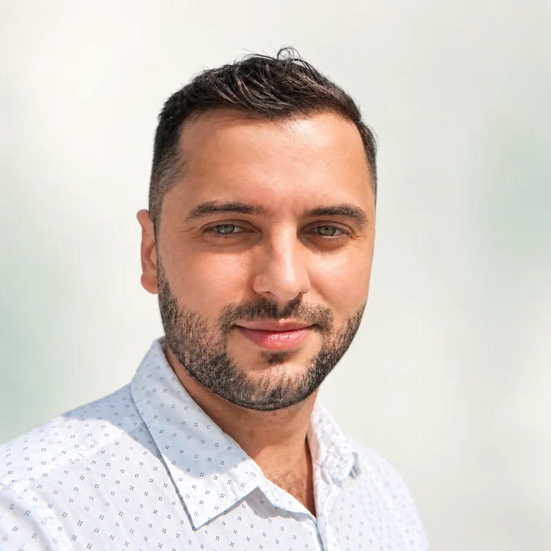
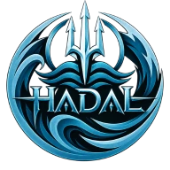

Christian
Balan.
Junior Partnerships Manager · Interactive CV
Partnership & Stakeholder Management · Gaming & Esports Community Builder · AI & Product Project ManagementPartnership & Stakeholder Management · Gaming & Esports Community Builder · KI & Produkt Projektmanagement
Core valuesKernwerteConnection · Impact · Community first · Consistency · OwnershipVerbindung · Wirkung · Community zuerst · Beständigkeit · Verantwortung

Not a sequence of pivots.Kein Zickzack-Kurs. One set of strengthsEin roter Faden.
Multidisciplinary product and project professional combining technology, gaming/esports, competitive sports, creative production, community leadership and healthcare. Different environments, the same underlying strengths: understanding people, building systems, coordinating teams, creating engaging experiences and delivering under pressure.Multidisziplinärer Produkt- und Projektprofi, der Technologie, Gaming/Esports, Leistungssport, Kreativproduktion, Community-Führung und Gesundheitswesen verbindet. Unterschiedliche Umfelder, dieselben Stärken: Menschen verstehen, Systeme bauen, Teams koordinieren, Erlebnisse schaffen und auch unter Druck liefern.
Highlights · proof partners care aboutHighlights · Zahlen, die für Partner zählen
- ~1,000~1.000members in the Standards.gg Discord community I founded and runMitglieder in der Discord-Community von Standards.gg, die ich gegründet habe und leite
- 50k+followers on the educational channel I built for Philosophy DigitalFollower auf dem Bildungskanal, den ich für Philosophy Digital aufgebaut habe
- 10countries in the NuArtistry network of artists, producers and creativesLänder im NuArtistry-Netzwerk aus Künstlern, Produzenten und Kreativen
- 4working languages: German, English, Romanian (native), French (full professional)Arbeitssprachen: Deutsch, Englisch, Rumänisch (Muttersprache), Französisch (verhandlungssicher)
- 11my age when I founded my first gaming clan and forum (Empire Earth)mein Alter, als ich meinen ersten Gaming-Clan samt Forum gründete (Empire Earth)
- 12therapists in a multidisciplinary team I scheduled and ran operations forTherapeuten in einem interdisziplinären Team, für das ich Planung und Betrieb verantwortet habe
- Plat & GoldPlatin & Goldrecord references as a music producer and audio engineer (AKM member)Referenzen als Musikproduzent und Audio Engineer (AKM-Mitglied)
Technology & ProductTechnologie & Produkt
AI & product project management, product ownership, requirements engineering and automation, as a mindset, not just a toolkit.KI- & Produkt-Projektmanagement, Product Ownership, Requirements Engineering und Automatisierung – als Denkweise, nicht nur als Werkzeugkasten.
Gaming & Esports
Where competition, teams, community, content and technology converge most naturally.Hier treffen Wettbewerb, Teams, Community, Content und Technologie am natürlichsten aufeinander.
Creative & RelationshipsKreativität & Beziehungen
A decade of music, production, artist networks and audience-facing creative work.Ein Jahrzehnt Musik, Produktion, Künstlernetzwerke und publikumsnahe Kreativarbeit.
Tools serve peopleTools dienen den Menschen
AI and project management shape how I lead but never decide for me: I work on my own authority, think for myself and was long an AI sceptic. Automation frees time for what matters: management and relationships.KI und Projektmanagement prägen, wie ich führe, aber sie entscheiden nicht für mich: Ich arbeite eigenverantwortlich, denke selbst und war lange KI-Skeptiker. Automatisierung schafft Zeit für das, was zählt: Management und Beziehungen.
Six active years leading communities and my own music company; the team later moved to other cities and carried on, e.g. as 100blackdolphins. What stays: real-life people skills, openness and connecting people on any occasion.Sechs aktive Jahre an der Spitze von Communities und meinem eigenen Musikunternehmen; das Team zog später in andere Städte und machte weiter, etwa als 100blackdolphins. Was bleibt: echte Menschenkenntnis, Offenheit und die Fähigkeit, bei jeder Gelegenheit Menschen zusammenzubringen.
Standards.gg.
Standards.ggHadal
Gründer · Leitung von WoW-Gilde, Community & Partnerschaften · WoW Season of Discovery → Forever · RemoteFounder · Gaming organization, community & partnerships lead · WoW Season of Discovery → Forever · Remote
Organisation & KulturOrganization & Culture
- Wettkampforientierte WoW-Gilde gegründet: Teamaufbau, Recruiting, Community, Content und Competitive OperationsFounded a competitive WoW guild: team building, recruitment, community, content and competitive operations
- Einen Ruf für Ehrgeiz, hohe Standards, Sportsgeist und Bescheidenheit aufgebaut – als Asset, das wir pflegen und schützenBuilt a reputation for competitiveness, strong standards, sportsmanship and humility, treated as an asset to build and protect
- Organisiert und konkurrenzfähig geblieben, während große Teile der Season-of-Discovery-Community aufgehört habenStayed organized and competitive while much of the Season of Discovery community stopped playing
- Jetzt Vorreiter für Season-of-Discovery-Spieler auf dem Weg zu ForeverNow leading the way for Season of Discovery players moving to Forever
Community & Content
- Discord-Community mit ~1.000 Mitgliedern in einem schrumpfenden Spiele-Ökosystem~1,000-member Discord community in a contracting game ecosystem
- YouTube: 34k Aufrufe in 9 Monaten mit Discord-PvP-Clips als Werbung für Spiel und CommunityYouTube: 34k views in 9 months with Discord PvP clips promoting the game and community
- Hands-on durch Wachstum, Rückschläge, Umstrukturierungen und sportliche Höhepunkte geführtHands-on through growth, setbacks, restructuring and competitive peaks
- 16.500+ Discord-Voice-Minuten16,500+ Discord voice minutes vom 1. Juni bis 1. Septemberfrom 1 June to 1 September
Technologie & AutomatisierungTechnology & Automation
- HADALON: unser eigener Bewerbungs- und Roster-Bot, entwickelt, nachdem ich die Bewerbungsabläufe vieler anderer Gilden-Discords selbst getestet habe: so wenige Klicks wie möglich bis zur fertigen Bewerbung. Gildenleiter anderer Server nennen ihn das beste Setup, das sie kennen, flüssiger als die meisten Verifizierungs-Bots: our own application and roster bot, designed after I tested the application flows of many other guild Discords myself: as few clicks as possible to a finished application. Guild leaders from other servers call it the best setup they have seen, smoother than most verification bots
- Roster und Rollen per Klick: Discord und GuildOrder synchronisieren in beide RichtungenOne-click rosters and roles: Discord and GuildOrder sync in both directions
- Alle Spieldaten außerhalb des Spiels: Honorable Kills, Rangfortschritt, MMR, Gilden- & persönliche Bank, Battle.net-Charaktere, Roster pro Charakter, Anwesenheitsstatistiken und Event-Sync, der feste Roster in Discord postetAll in-game data outside the game: honorable kills, rank progression, MMR, guild & personal bank, Battle.net characters, per-character rosters, attendance metrics, and event sync that posts fixed rosters into Discord
Produkt-ÖkosystemProduct Ecosystem
Ich verantworte Produktausrichtung und Umsetzung und verbinde Community-Bedürfnisse, Spielwissen und UX.I lead product direction and implementation, connecting community needs, game knowledge and UX.
Not a community. A hubKeine Community. Ein Hub.
I connect creators, platforms and our community, turning a member list into a hub partners want to be part of. Standards.gg is leading the way for Season of Discovery players moving to Forever.Ich verbinde Creator, Plattformen und unsere Community und mache aus einer Mitgliederliste einen Hub, zu dem Partner gehören wollen. Standards.gg ist Vorreiter für Season-of-Discovery-Spieler auf dem Weg zu Forever.
Partnership ManagementPartnership Management
I build, navigate and strengthen relationships across complex stakeholder environments, aligning people, interests and objectives while maintaining trust and momentum through both opportunities and challenges.Ich baue Beziehungen in komplexen Stakeholder-Umfeldern auf, steuere und stärke sie, bringe Menschen, Interessen und Ziele zusammen und halte Vertrauen und Momentum hoch – in guten wie in schwierigen Phasen.
Stakeholder & Community Management · Relationship Building · Conflict Resolution · Cross-Community CollaborationStakeholder- & Community-Management · Beziehungsaufbau · Konfliktlösung · Community-übergreifende Zusammenarbeit
Internally, I foster constructive dynamics across teams and communities. Externally, I manage relationships with partners, creators and other communities, connecting stakeholders, navigating differing interests and turning relationships into lasting, mutually valuable partnerships.Intern fördere ich eine konstruktive Dynamik zwischen Teams und Communities. Extern manage ich Beziehungen zu Partnern, Creatorn und anderen Communities: Ich verbinde Stakeholder, gleiche unterschiedliche Interessen aus und mache aus Beziehungen dauerhafte Partnerschaften mit Mehrwert für beide Seiten.
Close circleEnger Kreis
ReichweiteReach
Diese Creator erreichen einen großen Teil der WoW-Classic-Community. Wir sind über Discord und gemeinsame Discord-Communities in Kontakt.These creators reach a large part of the WoW Classic audience. We're in touch via Discord and shared Discord communities.
Eine Stimme in der SzeneA Voice in the Scene
Nohitjerome, einer der größten WoW-Classic-Creator, hat meinen Kommentar zu einem Thema, das das ganze Spiel betraf, unter einem Video mit heute über 300k Aufrufen (damals 170k) angepinnt.Nohitjerome, one of the biggest WoW Classic creators, pinned my comment on a game-wide issue under a video now past 300k views (170k at the time).
Why It Matters for G2Warum das für G2 zählt
Creator relationships, community and brand in one loop: the same muscle behind talent partnerships and activations, with creators, with platforms like GuildOrder.com and with long-standing communities like Hyjal and FUSE.Creator-Beziehungen, Community und Marke greifen ineinander – dieselbe Stärke, die Talent-Partnerschaften und Activations trägt: mit Creatorn, mit Plattformen wie GuildOrder.com und mit langjährigen Communities wie Hyjal und FUSE.
Teams aufbauen, seit ich 11 bin.Building teams since age 11.
Empire Earth: Gründer, Clan- & Forum-AdminEmpire Earth: Founder, Clan & Forum Admin
Clan und eigene RapidForum-Community (selbst in HTML gebaut) in der frühen ESL-Szene (Empire-Earth-Ligaset). Mitglieder spielten später für a-Losers / Frankfurter 69ers, darunter PsYcHo (Christian Lenz), mit 12 mein Mitspieler, heute im Esports. Ein Wiedersehen nach 20+ Jahren wäre etwas Besonderes. Mit 12 und 13 habe ich außerdem viel Magic: The Gathering gespielt.Built a clan and custom-HTML RapidForum community in the early ESL scene (Empire Earth Ligaset). Members later played for a-Losers / Frankfurter 69ers, among them PsYcHo (Christian Lenz), my teammate at 12, now in esports. Meeting that scene again 20+ years later would be special. At 12 and 13 I also played a lot of Magic: The Gathering.
Kapitän & Aufbauspieler: TuS Wuppertal und Schwelmer BasketsTeam captain & playmaker: TuS Wuppertal and Schwelmer Baskets
Kapitän in beiden Teams, in der Regionalliga 1 und 2: Führung auf und neben dem Feld, Kommunikation, Umgang mit Druck, Rollenklarheit und Teamleistung.Captain of both teams, in Regionalliga 1 and 2: leading on and off the court, communication, pressure, role clarity and collective performance.
Standards.gg: GründerStandards.gg: Founder
Derselbe Instinkt – nur größer und technischer: Führungsstruktur, Kultur, ~1.000 Mitglieder, eigene Bots, Community-Tech-Ökosystem.The same instinct at a far larger, more technical scale: leadership structure, culture, ~1,000 members, custom bots and a community tech ecosystem.
MOBAs: Bucharest Minor (Dota 2)
In MOBAs zu Hause (Dota 2, League of Legends); beim Bucharest Minor mit Pro-Spielern vernetzt, die die Szene prägen.At home in MOBAs (Dota 2, League of Legends); connected with the pro players running the scene at the Bucharest Minor.
GuildOrder.com ↗
Offizieller Sponsor: GuildOrder gibt uns seine kostenpflichtigen Toolkits gratis und zeigt Standards.gg als Vorzeigegilde: Die offiziellen Guides tragen unser Gildenlogo (theguildpost.com ↗). Ich betreue sie direkt mit Webmaster Steve; wir entwickeln AddOns und APIs gemeinsam.Official sponsor: GuildOrder gives us its paid toolkits for free and features Standards.gg as its example guild: its official guides show our guild and logo (theguildpost.com ↗). I manage it directly with webmaster Steve; we build AddOns and APIs together.
Früh vorbereitetPlanning ahead
Ich verfolge Blizzards Signale genau; so haben wir den Wechsel nach Forever früh vorbereitet.I follow Blizzard's signals closely, which is how we prepared the move to Forever early.
Stakeholders, delivery & operations.Stakeholder, Umsetzung & Operations.
KI-ProjektmanagerAI Project Manager
Ein Automatisierungssystem für Verwaltung & Kommunikation im Gesundheitswesen von der Idee bis zur Architektur mit KI/LLM-Workflows entwickelt. Zertifiziertes Abschlussprojekt.Took a healthcare admin & communications automation system from idea to architecture with AI/LLM workflows. Certified capstone.
IT-Support & Technical OwnerIT Support & Technical Owner
1st-/2nd-/VIP-Enterprise-Support; in die Rolle des Product Owners für den Matrix42 ServiceDesk hineingewachsen. Zentrale Schnittstelle zwischen Fachbereich, IT und Stakeholdern.1st/2nd/VIP enterprise support; grew into product owner of Matrix42 ServiceDesk. Central interface between business, IT and stakeholders.
Musikproduzent & Audio EngineerMusic Producer & Audio Engineer
Platin- & Gold-Referenzen, AKM-Mitglied. Ein LLM-System zum Verständnis von MIDI- und Audiostrukturen entwickelt (2026).Platinum & Gold references, AKM member. Built an LLM system for understanding MIDI and audio structure (2026).
Assistenz der Leitung → Praxismanagement → SystemadministratorExec. Assistant → Practice Mgmt → SysAdmin
Vertrauensperson und Schnittstelle einer Arztpraxis; Terminplanung für 12 Therapeuten; IT und Sicherheit nach den Vorgaben des deutschen Gesundheitswesens modernisiert.Trusted interface for a physician's practice; ran scheduling for 12 therapists; modernized IT and security under German healthcare rules.
Philosoph, Forschung & BildungPhilosopher, Research & Education
Einen Bildungskanal auf 50.000+ Follower ausgebaut; Inhalte auf Deutsch, Rumänisch und Französisch.Grew an educational social channel to 50,000+ followers; content in German, Romanian and French.
IT-Support-SpezialistIT Support Specialist
Ansprechpartner vor Ort für Kunden aus Schulen, Finanzwesen, Industrie, Gesundheitswesen und Hotellerie.On-site point of contact for schools, finance, manufacturing, healthcare and hospitality clients.
Also: N26 Group, Cyber Security Analysis Intern (Oct 2019 – Mar 2020, Berlin)Außerdem: N26 Group, Praktikant Cyber Security Analysis (Okt. 2019 – März 2020, Berlin)
AusbildungEducation
- Berklee College of Music: Musikproduktion, MusicianshipBerklee College of Music: Music Production, Musicianship
- Anton Bruckner Universität: JazzklavierAnton Bruckner Universität: Jazz Piano
- SRH Hochschule der populären Künste Berlin: MusikproduktionSRH Hochschule der populären Künste Berlin: Music Production
- Hochschule Fresenius: B.Sc. PsychologieHochschule Fresenius: B.Sc. Psychology
- SAE Institute: MusikproduktionSAE Institute: Music Production
SprachenLanguages
- Deutsch: Muttersprache / zweisprachigGerman: native / bilingual
- Englisch: Muttersprache / zweisprachigEnglish: native / bilingual
- Rumänisch: Muttersprache / zweisprachigRomanian: native / bilingual
- Französisch: verhandlungssicherFrench: full professional
Auszeichnungen & AnerkennungAwards & Recognition
- Stipendium Berklee Summer ProgramBerklee Summer Program Scholarship
- Keytar Competition Award
- Auszeichnung Voices of Civil CourageVoices of Civil Courage Award
- Jugend Musiziert
Talent, brands & audiences, from booking to payout.Talente, Marken & Publikum – vom Booking bis zur Auszahlung.
Creative networkKreativnetzwerk
NuArtistry: Gründer, unabhängiges Medienlabel & KreativnetzwerkNuArtistry: Founder, Independent Media Label & Creative Network
Eigenes unabhängiges Medienlabel. Kanita debütierte mit meiner Produktion, von mir geschrieben, komponiert, gemischt und veröffentlicht, und ist bis heute auf dem albanischen Markt bekannt. Netzwerk aus Künstlern, Engineers, Produzenten und Videokreativen in 10 Ländern. 1.000 CDs à 50 € verkauft (manche zahlten mehr): das Direct-to-Fan-Modell, mit dem Nipsey Hussle vor seinem Durchbruch arbeitete (Idee von Ryan Leslie), mit Guerilla-Marketing auf den europäischen Markt übertragen.Owned an independent media label. Kanita debuted with my production, written, composed, mixed and released by me, and remains famous in the Albanian market. Network of artists, engineers, producers and video creatives across 10 countries. Sold 1,000 CDs at €50 each (some paid more): the direct-to-fan model Nipsey Hussle used before his breakthrough (an idea from Ryan Leslie), adapted with guerrilla marketing for the European market.
Black Phoenix Enterprises ↗ / Beat Club
Kunden und Kollaborationen über Ryan Leslie / Black Phoenix, !llmind und die Roseville Music Group, mit Credits für große Namen der Branche, darunter der verstorbene Nipsey Hussle. Ryan Leslie begleitete den Start von NuArtistry als Mentor, und wir stehen bis heute in Kontakt; Netzwerk u. a. mit Swizz Beatz.Clients and collaborations via Ryan Leslie / Black Phoenix, !llmind and Roseville Music Group, with credits for major names in the industry, among them the late Nipsey Hussle. Ryan Leslie mentored the launch of NuArtistry, and we are still in touch today; network incl. Swizz Beatz.
Musik- & VideoproduzentMusic & Video Producer
Musikvideos in Paris, Athen und St. Petersburg mit offiziellen Drehgenehmigungen, die schwer zu bekommen waren. Eigenes Inhouse-Team mit bis zu 10 Leuten geführt, statt nur externe Dienstleister zu buchen, z. B. 10 Personen beim Pariser Video „Beaucoup d’argent“. Debütalbum GENESIS (2015), „St. Petersburg“ auf VEVO.Music videos in Paris, Athens and St. Petersburg with official filming permits that were hard to get. Led a dedicated in-house team of up to 10 rather than only booking third parties, e.g. 10 people on the Paris video "Beaucoup d’argent". GENESIS debut album (2015), "St. Petersburg" on VEVO.
Unabhängige Agentur: Gründer & TeamleitungIndependent Agency: Founder & Team Lead
Die NuArtistry Lifestyle Group ins Leben gerufen: Künstlerbooking, Kollaborationen, Social-Media-Marketing und Imagepflege, intern und für andere Künstler.Launched the NuArtistry Lifestyle Group: artist booking, collaborations, social-media marketing and image management, in-house and for other artists.
Events · activations end to endEvents · Activations von A bis Z
Cultural programmes and tournaments run end to end, from line-up to payout: the same loop as a partner activation at G2.Kulturprogramme und Turniere von A bis Z verantwortet, vom Line-up bis zur Auszahlung: derselbe Ablauf wie eine Partner-Activation bei G2.
Big F Cup ↗ · Spieler & Discord-ModerationPlayer & Discord Moderation
Abschieds-PvP-Turnier zu Season of Discovery: gespielt als „Cryt“ (Team Sunstrike), Discord für 6 Teams moderiert und Veranstalter PizzaHunter bei der Gestaltung fairer Regeln unterstützt. Gestreamt u. a. von Ziqo und TooLateBro Gaming: 100k+ Zuschauer, 14.000 AED Preisgeld im Finale.Farewell Season of Discovery PvP tournament: played as “Cryt” (Team Sunstrike), moderated the Discord for 6 teams and helped organizer PizzaHunter shape fair rules. Streamed by Ziqo, TooLateBro Gaming and others: 100k+ viewers, 14,000 AED finals prize pool.
Event Manager
Verantwortlich für das Kulturprogramm: regelmäßige Jazzfrühschoppen und Jazz-Jam-Sessions.Owned the cultural programme (Kulturprogramm): recurring Jazzfrühschoppen (jazz brunches) and jazz jam sessions.
Event- / Booking-AssistentEvent / Booking Assistant
Auf Abruf gebucht dank eines großen eigenen Netzwerks: Ich habe ‚alle‘ Jazzschulen besucht, Musiker vernetzt und sogar eine Facebook-Gruppe gegründet, um alle in einem Hub zu bündeln. Jazzkonzerte mit etablierten Talenten kuratiert und gespielt.Booked on demand thanks to a large personal network: I visited ‘every’ jazz school, connected the musicians and even started a Facebook group to bring everyone into one hub. Curated and performed jazz concerts with established talent.
OrganisatorOrganizer
Die Smashion-Jam-Sessions und Konzerte für Studierende der Anton Bruckner Universität und alle weiteren Gäste organisiert.Organized the Smashion jam sessions and concerts for students of the Anton Bruckner Universität and all other guests.
The toolkit behind partnerships.Das Handwerkszeug hinter Partnerschaften.
Core CompetenciesKernkompetenzen
Systems thinking: turning ambiguity into structured requirements, workflows and executable solutions, and understanding what’s under the hood.Systemdenken: aus Unklarheit strukturierte Anforderungen, Workflows und umsetzbare Lösungen machen – und verstehen, was technisch dahintersteckt.
Projekt & ProduktProject & Product
ITSM & BetriebITSM & Operations
Data Science
KI & AutomatisierungAI & Automation
Infrastruktur & SicherheitInfrastructure & Security
Community Tech
Built for G2’s partnership business.Passgenau für G2s Partnergeschäft.
Why this role fitsWarum die Rolle passt
The role sits where relationship management, project execution, gaming culture, content, data and commercial thinking meet. That intersection is close to what I already do.Die Rolle verbindet Beziehungsmanagement, Projektumsetzung, Gaming-Kultur, Content, Daten und kaufmännisches Denken – nah an dem, was ich heute schon mache.
01Partner- & Account-ManagementPartner & Account Management
Verlässlicher Ansprechpartner für Geschäftsführung, Enterprise-Kunden und Stakeholder: Vertrauen aufgebaut, Interessen ausbalanciert, jede Zusage eingehalten.Trusted counterpart to executives, enterprise clients and key stakeholders: built trust, balanced interests, kept every commitment.
02Verantwortung für DeliverablesOwnership of Deliverables
Verträge, Deadlines, Freigaben, Follow-ups. Enterprise-IT und die Assistenz der Geschäftsleitung haben mir gezeigt: Details gehören zur Verantwortung.Contracts, deadlines, approvals, follow-ups. Enterprise IT and executive support taught me that details are part of ownership.
03Activation & UmsetzungActivation & Execution
Ideen von der Planung über Koordination und Produktion bis zur Auslieferung umsetzen: von Musik und Video bis zu KI-Projekten und Standards.gg.Taking ideas through planning, coordination, production and delivery, from music and video to AI projects and Standards.gg.
04Gaming im BlutGaming-Native
Vom Empire-Earth-Clan mit 11 über die frühe ESL-Ära bis zum heutigen World-of-Warcraft-Ökosystem.From an Empire Earth clan at 11, through early ESL-era gaming, to today's World of Warcraft ecosystem.
05Community & ReichweiteCommunity & Audience
Standards.gg-Hub mit ~1.000 Mitgliedern, direkter Streamer-Kontakt via Discord, 50k+ Follower auf einem Kanal, den ich für Philosophy Digital aufgebaut habe, Video & Social als Promotion-Kanal.~1,000-member Standards.gg hub with direct streamer contacts via Discord, 50k+ followers on a channel I built for Philosophy Digital, video and social as promotion infrastructure.
06Marke & ReputationBrand & Reputation
Bekannt für extremen Ehrgeiz mit Reife, Sportsgeist und Bescheidenheit – auch in einem Spiel am Ende seines Lebenszyklus.A reputation for extreme competitiveness with maturity, sportsmanship and humility, kept alive in an end-of-life game.
07Technik- & DatenkompetenzTechnical & Data Fluency
Python, EDA, Predictive Modeling, Jira, Confluence, APIs, Automatisierung, KI/LLMs. Ich weiß, was technisch hinter einer Partnerschaft steckt.Python, EDA, predictive modeling, Jira, Confluence, APIs, automation, AI/LLMs. I understand the implementation behind a partnership.
08Kreatives PartnerschaftsdenkenCreative Partnership Thinking
Wie Marken, Creator und Publikum zusammenfinden und wie aus Konzepten Erlebnisse werden, die Menschen erleben wollen.How brands, creators and audiences connect, and how to turn concepts into something people want to experience.
09Teamgeist aus dem LeistungssportCompetitive-Team Mindset
Kapitän und Aufbauspieler bei TuS Wuppertal und den Schwelmer Baskets, Regionalliga 1 und 2: Kommunikation, Disziplin, Verantwortung, Teamleistung.Captain & playmaker, TuS Wuppertal and Schwelmer Baskets, Regionalliga 1 and 2: communication, discipline, accountability, team performance.
Day one at G2Tag eins bei G2
Sponsorship is G2’s largest revenue pillar (about 45%), built on multi-game, multi-year partnerships with brands like Logitech G, Secretlab, Seasonic, Winamax and Wizards of the Coast. Here is how I would help grow it, mapped to the Partnerships Manager brief.Sponsoring ist G2s größte Umsatzsäule (rund 45 %), getragen von mehrjährigen, titelübergreifenden Partnerschaften mit Marken wie Logitech G, Secretlab, Seasonic, Winamax und Wizards of the Coast. So würde ich helfen, dieses Geschäft auszubauen – entlang des Stellenprofils Partnerships Manager.
Partner deliverables, tracked livePartner-Deliverables live getrackt
Every obligation, deadline and asset in one partner hub, with automated status updates and recap reports. Nothing slips between partner, content, social and teams.Jede Verpflichtung, Deadline und jedes Asset in einem Partner-Hub, mit automatischen Status-Updates und Recap-Reports. Nichts geht zwischen Partner, Content, Social und Teams verloren.
Renewals backed by dataVerlängerungen auf Datenbasis
Interactive recap dashboards per partner: reach, engagement, community sentiment and delivered assets. Renewal and upsell talks start from proof, not promises.Interaktive Recap-Dashboards pro Partner: Reichweite, Engagement, Community-Stimmung und gelieferte Assets. Verlängerungs- und Upsell-Gespräche starten mit Belegen statt Versprechen.
Activations that feel nativeAuthentische Activations
Built with content, community and 62: e.g. community formats around the rotating Wizards of the Coast Counter-Strike jersey, from someone who played Magic: The Gathering as a kid, or creator and Discord formats for the PUBG Mobile Western Europe push.Mit Content, Community und 62: z. B. Community-Formate rund um das wechselnde Wizards-of-the-Coast-Trikot des Counter-Strike-Teams – von jemandem, der als Kind selbst Magic: The Gathering gespielt hat – oder Creator- und Discord-Formate für den PUBG-Mobile-Push in Westeuropa.
A radar for new categoriesRadar für neue Kategorien
Trading-card publishers entering esports, mobile esports in Western Europe, regulated betting, AI tooling: I spot shifts early and turn them into propositions for partners and for G2.Trading-Card-Publisher im Esports, Mobile Esports in Westeuropa, regulierte Wettanbieter, KI-Tools: Ich erkenne Entwicklungen früh und mache daraus Angebote für Partner und für G2.
G2’s PEAK values, already livedG2s PEAK-Werte, die ich schon lebe
- Performanceteam captain & playmaker, Regionalliga 1 and 2; competitive WoWKapitän & Aufbauspieler, Regionalliga 1 und 2; kompetitives WoW
- Entrepreneurshipfounded NuArtistry & Standards.ggNuArtistry & Standards.gg gegründet
- Authenticityartists kept their master rightsKünstler behielten ihre Master-Rechte
- Kindnesscommunity first, even in conflictsCommunity zuerst, auch im Konflikt
Warum G2?Why G2? Warum ich?Why me?
USPWhere AI, technology, product, partnerships and gaming meet, I connect stakeholders and turn complex business needs into executable solutions: data, automation and community insight become scalable operations, stronger partnerships and measurable commercial growth, made visible in interactive data products and executive-level visualizations that turn complex metrics into clear decisions.Wo KI, Technologie, Produkt, Partnerschaften und Gaming zusammenkommen, verbinde ich Stakeholder und übersetze komplexe Business-Anforderungen in umsetzbare Lösungen: Aus Daten, Automatisierung und Community-Insights werden skalierbare Abläufe, stärkere Partnerschaften und messbares kommerzielles Wachstum, sichtbar gemacht in interaktiven Datenprodukten und Visualisierungen für die Geschäftsleitung, die aus komplexen Kennzahlen klare Entscheidungen machen.
Ich bin fest überzeugt: In der Gaming-Branche kann ich meine Fähigkeiten am besten für exzellente Ergebnisse einsetzen, und für mein Profil ist sie ein mehr als spannender Karriereweg. Partnership Management im Gaming muss interdisziplinär sein und lässt sich auf ganz unterschiedlichen Wegen umsetzen. Und ich bringe eine Menge Kreativität mit.I firmly believe that the gaming sector gives me the opportunity to best implement my skills for excellent results, and a more than interesting career path for my skill set: Partnership Management in gaming must be interdisciplinary and can be achieved in a variety of ways. And I bring quite some creativity.
I would value the opportunity to earn your trust over the first six months by turning my experience and skill set into measurable results, meaningful partnerships and tangible value for G2.Ich würde gern die Chance nutzen, mir in den ersten sechs Monaten euer Vertrauen zu verdienen – indem ich Erfahrung und Können in messbare Ergebnisse, wertvolle Partnerschaften und greifbaren Mehrwert für G2 umsetze.
Ich denke in Systemen.I think in systems.
Meine Mischung aus IT, Cybersecurity, Product Ownership, KI/Automatisierung und technischem Problemlösen passt zu einer Esports-Organisation, die eher wie ein Technologie- und Medienunternehmen arbeitet als wie ein reines Gaming-Team.My mix of IT, cybersecurity, product ownership, AI/automation and technical problem-solving fits an esports organization that operates more like a technology and media company than just a gaming team.
Ich baue, statt nur zu reden.I build things, not just talk about them.
Diese GitHub-basierte Bewerbung, KI-Projekte, Web-Tools, Automatisierung und die Standards.gg-Projekte zeigen, dass ich umsetze.This GitHub-driven application, AI projects, web tools, automation work and the Standards.gg projects demonstrate execution.
Ein ungewöhnlich interdisziplinäres Profil.An unusual interdisciplinary profile.
IT + KI + Produkt + Gaming- und Community-Operations: eine markantere Kombination als ein klassisches Junior-Profil in KI oder Projektmanagement.IT + AI + product + gaming/community operations is a more distinctive combination than a conventional junior AI/PM profile.
Ich kenne Gaming-Communities von innen.I understand gaming communities from the inside.
Jahrelange WoW- und Gilden-Administration: praktische Erfahrung mit Discord, Community-Strukturen, Events, Branding, Recruiting und digitalen Produkten.Long-term WoW and guild administration gives me practical experience with Discord, community structures, events, branding, recruitment and digital products.
G2s Welt passt zu meinen Interessen.G2’s world matches my interests.
G2 vereint Esports, Entertainment, Content, Partnerschaften, Community und Technologie – mein Profil passt also auf mehreren Ebenen, nicht nur über eine einzelne Fähigkeit.G2 spans esports, entertainment, content, partnerships, community and technology, so my profile maps onto the organization in several ways rather than through one narrow skill.
Neue, effiziente Workflows im Partnership Management.Efficient new workflows in partnership management.
Ich entwickle gern neue, effiziente Workflows im Partnership Management – vom Tracking der Deliverables bis zum Reporting – und würde mein Können sehr gern in G2s Tagesgeschäft einbringen.I enjoy pioneering new, efficient ways of working in partnership management, from tracking deliverables to reporting, and would be glad to bring my skill set to G2’s day-to-day work.
Let's build something big together. Everything I've built across gaming, esports, technology, partnerships, creative production, community and competition, brought to G2’s partners.Lasst uns gemeinsam Großes schaffen. Alles, was ich in Gaming, Esports, Technologie, Partnerschaften, Kreativproduktion, Community und Wettbewerb aufgebaut habe – für G2s Partner.
Bonus: Example ProjectBonus: Beispielprojekt.
Selected examples of how I approach partnerships, strategy and execution.Ausgewählte Beispiele dafür, wie ich Partnerschaften, Strategie und Umsetzung angehe.